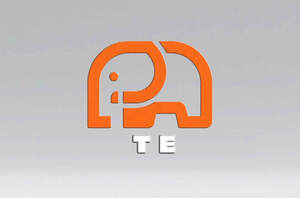

Trade Mark Journal No.2025/046 14 November 2025
UK00004257780 2 September 2025 (9,35)

- Class 9
- Computer software for use on handheld mobile digital electronic devices and other consumer electronics; Remote controls for electronic products; Electronic components; Software related to handheld digital electronic devices; Wearable digital electronic communication devices; Computer applications for automotive electronic control; Electric and electronic components; Electrical and electronic components; Electronic components for computers; Electronic game software for handheld electronic devices; Electronic semi-conductors; Information storage devices [electric or electronic]; Electronic tags for goods; Electronic telecommunications instruments; Electronic advertising displays; Electronic communications instruments; Coolers for electronic components; Testing devices for electronic parts; Electronic components used in machines; Hardware for processing electronic payments to and from others; Wearable digital electronic devices capable of providing access to the Internet; Electronic imaging devices; Electrical and electronic instruments for processing data; Remote controllers for controlling electronic products; Digital electronic controllers; Optical electronic components; Electronic magazines; Electronic chips for the manufacturer of integrated circuits; Information carriers [electric or electronic]; Firmware and software for electronic cigarettes; Electronic metering devices for faucets; Electronic personal alarm devices; Electronic tablets.
- Class 35
- Providing market information in relation to consumer products; Providing consumer product information relating to food or drink products; Consumer market information services; Providing consumer product information; Wholesale services relating to electronic household appliances; Providing consumer product information relating to cosmetics; Providing consumer product recommendations; Retail services in relation to domestic electronic equipment; Commercial information and advice services for consumers in the field of cosmetic products; Providing consumer product information relating to laptops; Advertising relating to pharmaceutical products and in-vivo imaging products; Commercial information and advice services for consumers in the field of beauty products; Retail services in relation to downloadable electronic publications; Commercial information and advice services for consumers in the field of make-up products; Providing consumer product information relating to software; Providing consumer product information via the Internet; Online retail store services relating to cosmetic and beauty products; Advertising services relating to pharmaceutical products; Providing consumer product advice; Commercial information and advice for consumers in the choice of products and services; Providing consumer product advice relating to laptops; Wholesale services in relation to domestic electronic equipment; Providing consumer product advice relating to cosmetics; Consumer research; Providing consumer product advice relating to software; Retail services relating to horticultural products; Retail services relating to delicatessen products; Retail services in relation to dairy products; Retail services in relation to pet products; Providing consumer information relating to goods and services; Electronic stock management services; Presentation of financial products on communication media, for retail purposes; Providing commercial information and advice for consumers in the choice of products and services; Advertising services relating to the commercialization of new products; Retail services relating to bakery products; Retail services in relation to hair products; Providing recommendations of goods to consumers for commercial purposes; Online retail services for downloadable digital music.
Yang Hai